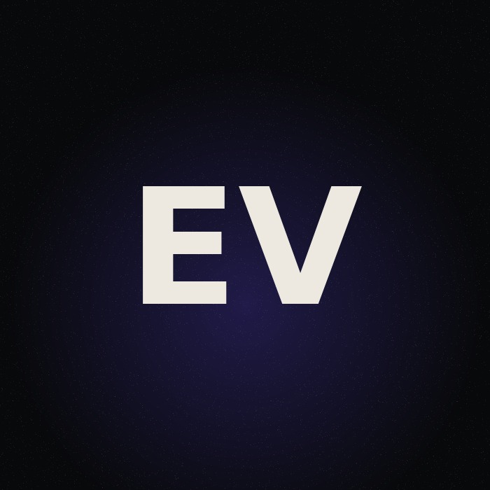
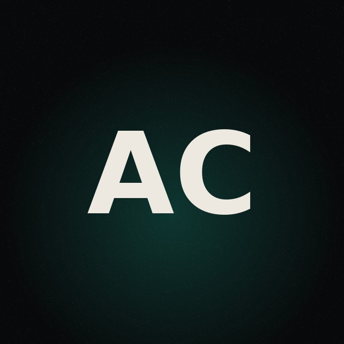

01Misinformation
Misinformation
Detection
Graph methods that surface coordinated influence operations while they are still running.
Open ↗Meridian University — School of Computing
A research lab building natural language systems that are transparent, equitable and accountable to the communities they affect.
01 — Position
Est. 2026 · Sydney
Language technology is deployed faster than it is understood.
We work in that gap. We audit systems that are already in production, publish the datasets others keep private, and build evaluation that reflects the people on the other side of the model.
Most benchmarks measure what is convenient to measure. Our work starts from the opposite question: what does this system do to someone it was never designed for?
Open datasets and reproducible method
Community-centred evaluation
Deployment, not demonstration
02 — Research
Graph methods that surface coordinated influence operations while they are still running.
Open ↗Moderation that does not misread marginalised dialects as hostility.
Open ↗Corpora and models for languages the field has left without support.
Open ↗“Benchmarks measure what is easy to measure. We try to measure what matters.”— Lab principle
03 — Dispatches
Two papers accepted to FAccT 2026, including an external audit of four commercial moderation APIs.
Elena Vasquez speaks on accountable evaluation at the Sydney AI Policy Forum.
Accepted at EMNLP 2026 — coordinated misinformation at scale, across four platforms.
TruthLens v0.4 published, adding cross-platform narrative tracking and a public API.
Rohan Mehta receives Best Paper at the ACL Workshop on Multilingual NLP.
VoiceEquity expanded to eleven language varieties, with speaker consent documentation.
Google Research Award supporting work on equitable language technology.
Amara Chukwu joins the lab as a doctoral researcher.
04 — People


05 — Publications
Vasquez, E. · Mehta, R. · Chukwu, A.
A graph-based framework that identifies coordinated inauthentic behaviour from interaction structure rather than content alone, evaluated across four platforms and two election periods.
Mehta, R. · Vasquez, E.
Transfer methods for abuse detection in languages with fewer than 50k labelled examples, with an audit of false-positive rates across regional dialects.
Chukwu, A.
A longitudinal study of three online communities before and after the arrival of generative text, tracking changes in how members verify claims and attribute authorship.
Mehta, R. · Chukwu, A. · Vasquez, E.
An external audit of four commercial moderation APIs, showing consistent over-flagging of non-standard dialects and proposing a disparity metric for procurement.
Chukwu, A. · Vasquez, E.
A community-led corpus construction method and baseline models for six languages with no prior NLP support, released under an open licence with speaker consent protocols.
Vasquez, E.
Argues that moderation benchmarks should be scored by affected communities rather than annotator majority, with a protocol and results from three participant panels.
Chukwu, A. · Mehta, R.
Interview study with 34 users who had content removed, mapping the gap between platform explanations and what people actually need in order to appeal.
Vasquez, E. · Mehta, R.
The lab’s first public benchmark, covering accent, dialect and register variation across eleven language varieties.
No papers match that search.
06 — Tools
A toolkit for detecting coordinated inauthentic behaviour from interaction graphs. Runs on exported platform data, produces auditable reports rather than opaque scores.
A benchmark covering accent, dialect and register variation across eleven language varieties, built with community consent protocols and full speaker documentation.
07 — Media
A tour of the site and its structure.
Recent progress and what comes next.
Recordings are published here as work is completed.
08 — Support
09 — Contact
We welcome prospective doctoral students, collaborators and partners working on language technology and its social consequences.